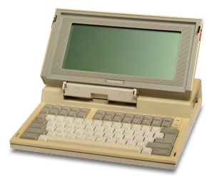
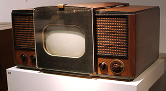

Blog
-
World first internet
FEBRUARY 6, 2021The first workable prototype of the Internet came in the late 1960s with the creation of ARPANET, or the Advanced Research Projects Agency Network. Originally funded by the U.S. Department of Defense, ARPANET used packet switching to allow multiple computers to communicate on a single network.
Read More -

World first laptop
FEBRUARY 3, 2021In April 1985, Toshiba released the world's first laptop PC, the T1100, in Europe. The company had given up on the PC business in the U.S., and the Japanese market at the time was dominated by the NEC PC-98 computer lineup, which was not compatible with Toshiba's machine.
Read More
-
FEATURED POSTS
First television
FEBRUARY 6, 2021 -
RECENT Blog
-

My Blog 1
FEBRUARY 3, 2021 -

My blog 2
FEBRUARY 1, 2021
-